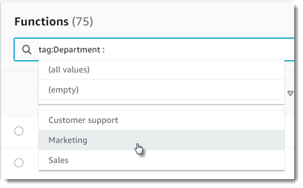

Tagging Lambda Functions
You can tag Lambda functions to organize them by owner, project or department. Tags are freeform key-value pairs that are supported across AWS services for use in filtering resources and adding detail to billing reports.
To add tags to a function
-
Open the Functions page
on the Lambda console. -
Choose a function.
-
Under Tags, choose Manage tags.
-
Enter a key and value. To add additional tags, choose Add new tag.

-
Choose Save.
You can filter functions based on the presence or value of a tag with the Lambda console or with the AWS Resource Groups API. Tags apply at the function level, not to versions or aliases. Tags are not part of the version-specific configuration that is snapshotted when you publish a version.
To filter functions with tags
-
Open the Functions page
on the Lambda console. -
Click within the search bar to see a list of function attributes and tag keys.

-
Choose a tag key to see a list of values that are in-use in the current region.
-
Choose a value to see functions with that value, or choose (all values) to see all functions that have a tag with that key.

The search bar also supports searching for tag keys. Type tag to see just a list of tag keys, or
start typing the name of a key to find it in the list.
With AWS Billing and Cost Management, you can use tags to customize billing reports and create cost-allocation reports. For more information, see see Monthly Cost Allocation Report and Using Cost Allocation Tags in the AWS Billing and Cost Management User Guide.
Using Tags with the AWS CLI
When you create a new Lambda function, you can include tags with the --tags option.
aws lambda create-function --function-name my-function --handler index.js --runtime nodejs12.x \ --role arn:aws:iam::123456789012:role/lambda-role\ --tags Department=Marketing,CostCenter=1234ABCD
To add tags to an existing function, use the tag-resource command.
aws lambda tag-resource \ --resource arn:aws:lambda:us-east-2:123456789012:function:my-function\ --tags Department=Marketing,CostCenter=1234ABCD
To remove tags, use the untag-resource command.
aws lambda untag-resource --resourcefunction arn\ --tag-keysDepartment
If you want to view the tags that are applied to a specific Lambda function, you can use either of the following Lambda API commands:
-
ListTags – You supply your Lambda function ARN (Amazon Resource Name) to view a list of the tags associated with this function:
aws lambda list-tags --resourcefunction arn -
GetFunction – You supply your Lambda function name to a view a list of the tags associated with this function:
aws lambda get-function --function-name my-function
You can also use the AWS Tagging Service’s GetResources API to filter your resources by tags. The GetResources API receives up to 10 filters, with each filter containing a tag key and up to 10 tag values. You provide GetResources with a ‘ResourceType’ to filter by specific resource types. For more information about the AWS Tagging Service, see Working with Resource Groups.
Tag Key and Value Requirements
The following requirements apply to tags:
-
Maximum number of tags per resource—50
-
Maximum key length—128 Unicode characters in UTF-8
-
Maximum value length—256 Unicode characters in UTF-8
-
Tag keys and values are case sensitive.
-
Do not use the
aws:prefix in your tag names or values because it is reserved for AWS use. You can't edit or delete tag names or values with this prefix. Tags with this prefix do not count against your tags per resource limit. -
If your tagging schema will be used across multiple services and resources, remember that other services may have restrictions on allowed characters. Generally allowed characters are: letters, spaces, and numbers representable in UTF-8, plus the following special characters: + - = . _ : / @.